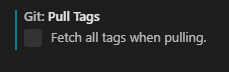

How to get rid of "would clobber existing tag"
I'm using git in VSCodium and each time I try to pull git is complaining.
Looking into the log I see
> git pull --tags origin master From https://github.com/MY/REPO * branch master -> FETCH_HEAD ! [rejected] latest -> latest (would clobber existing tag) 9428765..935da94 master -> origin/master
Doing the command with --force helps until the next time.
It's unclear to me what's going wrong here. What happened and how can I resolve this issue?
I mean: Besides trashing my local repo and cloning again.
Answer
Since you say it's unclear what's going wrong, I assume you're not using that tag for anything and you just want to do your own work.
Turn off this setting:

Or add this"git.pullTags": false in the settings.json file`
Now you're all set.
Detailed explanation:
Tags are just references to specific commits (just like branch names). The
main difference is that git (as far as I know) assumes tags will not change,
where branches are expected to be updated.
So, the "error" is that you have in your local a tag called latest pointing
to commit X - but the remote has a tag called latest pointing to commit Y.
If you apply the change from the remote you will overwrite your local tag.
VSCode will pull all tags by default, thus you get the error.
There isn't anything wrong with having a "moving" tag like latest, that
just isn't something VSCode takes into account (personal opinion).
Alternatively, you can avoid the issue by using the command line and manually
entering the git pull command. Specifically, you need to omit --tags to
skip this step of the process.
If you do this, your tags will not be updated - but I don't think is a concern here.
Suggest
Since you say it's unclear what's going wrong, I assume you're not using that tag for anything and you just want to do your own work.
Turn off this setting:
Or add this"git.pullTags": false in the settings.json file`
Now you're all set.
Detailed explanation:
Tags are just references to specific commits (just like branch names). The
main difference is that git (as far as I know) assumes tags will not change,
where branches are expected to be updated.
So, the "error" is that you have in your local a tag called latest pointing
to commit X - but the remote has a tag called latest pointing to commit Y.
If you apply the change from the remote you will overwrite your local tag.
VSCode will pull all tags by default, thus you get the error.
There isn't anything wrong with having a "moving" tag like latest, that
just isn't something VSCode takes into account (personal opinion).
Alternatively, you can avoid the issue by using the command line and manually
entering the git pull command. Specifically, you need to omit --tags to
skip this step of the process.
If you do this, your tags will not be updated - but I don't think is a concern here.